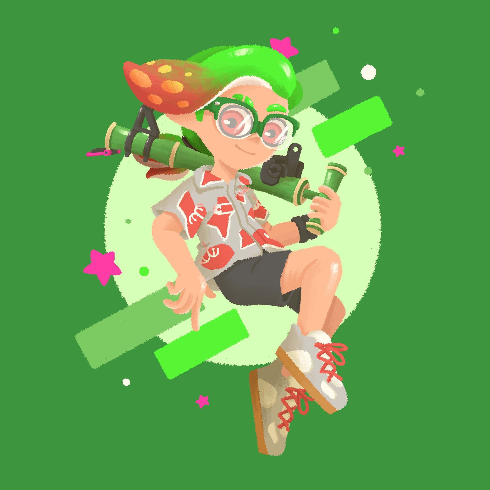
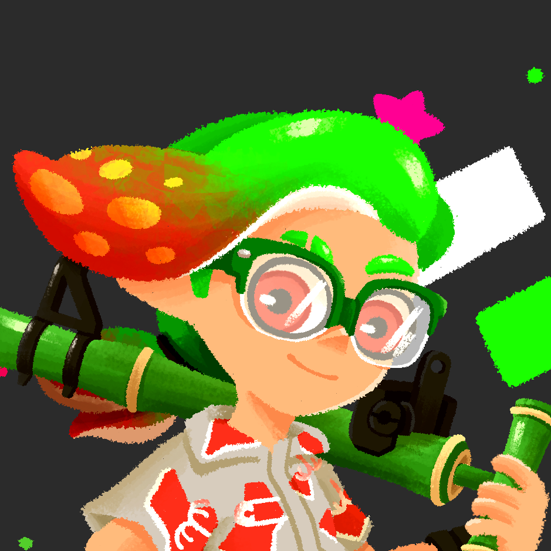

Description
Character
Man with a ponytail, glasses, an aloha shirt, and loose fitting, black denim shorts. He will have closed-toe leather strap sandals instead of the lace shoes in the original pfp. Relaxed pose that feels fun and inviting rather than serious. He should still be unmistakably male despite his more soft vibe.
Style
Not a really a chibi style, but still more cute than serious. Shapes can lean toward anime-like style as needed. Shading should not be in extreme gradients, but more like cell shaded with a crisp look. The chin should not be too sharp, with just a little jawline definition.
Background
Transparent so I can adjust the color myself.
Current Profile Picture Art
My current profile picture (made by kinnju) is a bit too pastel and 'fluffy', if you will. However, the main reason I want to change it is because I'm trying to move away from the squid kid since it's closely associated with Nintendo's intellectual property.
Key changes: The shoes in my new pfp will not be closed-top, leather strap sandals. Also, for the shirt colors, I'd rather go with pink flowers with some light blue and yellow incorperated in.

Original colors

Modified colors
Visual Style References
Make sure to read the comment below each reference. Also, click each image to go to the original post.

Good pose, colors slightly too pastel. Soft chin is nice.

Good cuteness level and color vibrancy. Chin is too sharp.

Too chibi but cell shading is nice.

Too serious.